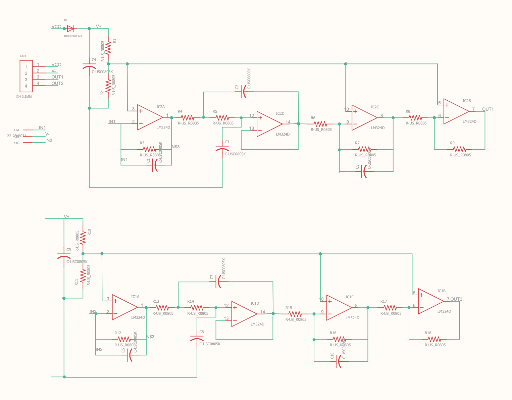
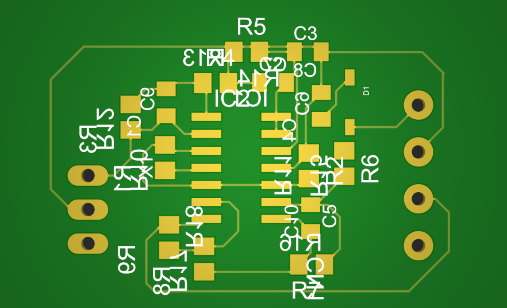

Using PVDF sensors
What is Sleep Apnea?
Sleep apnea, also spelled sleep apnoea, is a sleep disorder in which pauses in breathing or periods of shallow breathing during sleep occur more often than normal. Each pause can last for a few seconds to a few minutes and they happen many times a night. In the most common form, this follows loud snoring. There may be a choking or snorting sound as breathing resumes. Because the disorder disrupts normal sleep, those affected may experience sleepiness or feel tired during the day.
OSA is a common sleep disorder. A large analysis in 2019 of the estimated prevalence of OSA found that OSA affects 936 million—1 billion people between the ages of 30-69 globally, or roughly every 1 in 10 people, and up to 30% of the elderly. Sleep apnea is somewhat more common in men than women, roughly a 2:1 ratio of men to women, and in general more people are likely to have it with older age and obesity.
Project Introduction:
I interned at the Indian Institute of Science for 2 months and worked on a project to be able to detect sleep apnea in patients using a wearable device. I made use of capacitive sensors to do this project. It was a prototype and its purpose was to make a record of breathing patterns to identify any anomalies and with this report, a physician could suggest an optimal diagnosis so its effects could be reduced or identified in early stages.
Related Papers Referred:
Identification of RR by using a PVDF Nasal Sensor
Packaging of PVDF
PVDF film based nasal sensor to monitor
Background:
We made use of PVDF sensors fabricated in the Indian Institute of Science to detect the breathing patterns. PVDF film ( Precision Acoustics, UK) is taken in the cantilever configuration to form a PVDF nasal sensor. Two such identical nasal sensors were mounted on either side of headphone such that one PVDF nasal sensor is located below Right Nostril (RN) and the other below Left Nostril (LN), such that the nasal airflow during inspiration and expiration impinge on sensors.
Since PVDF has piezoelectric property (polarization produced by mechanical forces), it gives corresponding voltage signal when nasal airflow impinges on it. The PVDF nasal sensors measures respiration from RN and LN, separately and simultaneously. These signals are sent to an amplifier circuit as the signals produced by the PVDF sensors give a very low output and the amplified signals are then cleaned to be analysed.
Working of the Project:
 
This included designing an amplifier circuit specific for the two sensors and the cirucit diagram is as shown above. I also designed a PCB using Eagle software to make the circuitry as compact as possible so it would not deter the headset and would allow for good mounting. The PCB design is shown above as well.
I used the LM324D as the Op Amp (Operational Amplifier) to get the amplified signal in a combination with various resistors and capacitors and the PCB manufacturing was done by an outside company.
Assessment of nasal airflow is carried out by recording pressure at the nostrils. To achieve this, conventional nasal prongs, used for oxygen therapy, were connected to a pressure transducer. The rationale of the method is that the airflow turbulences at the nostrils induce a pressure that is directly related to the magnitude of nasal airflow.
Results:
We were able to use two PVDF sensors along with the manufactured PCB and the Amplifier cirucitry to detect breathing patterns by mounting the whole setup on a normal headset.
It is not a released product but it could be improved by making a custom headset and modifying it looks and sensitivity to make it a comfortable product to use on a daily basis. It also needs to be tested against real data obtained from patients to find out its effectiveness and modify the required parameters.